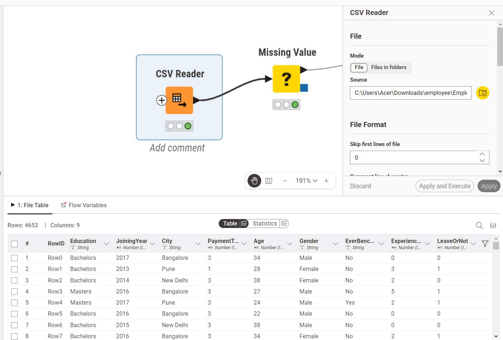
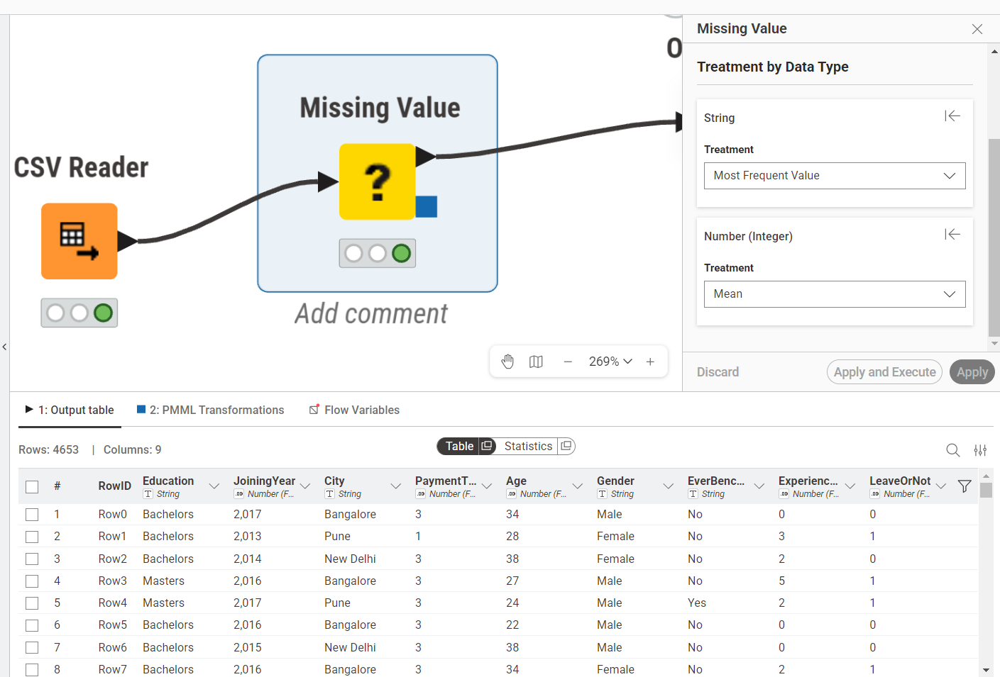
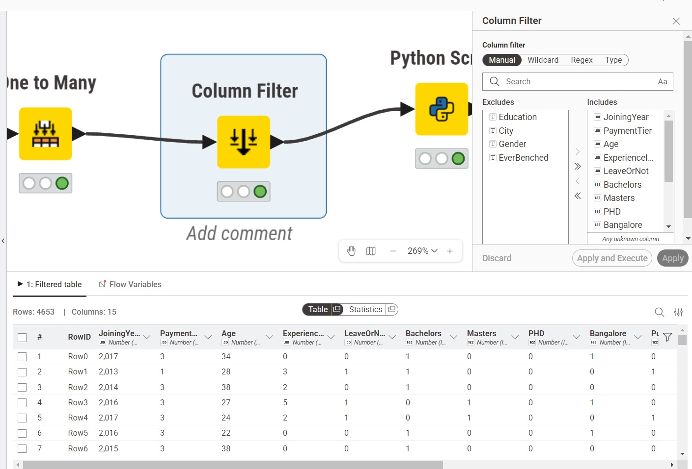
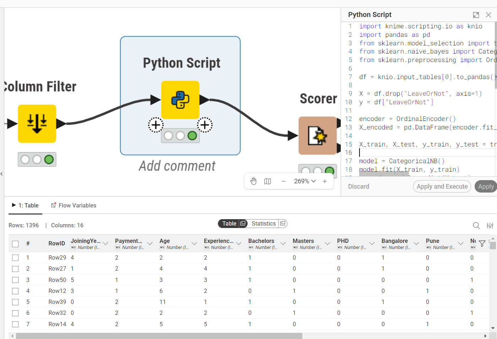
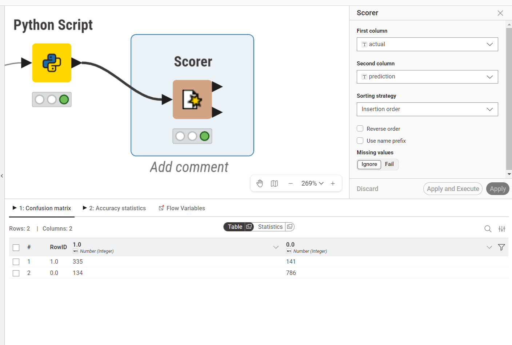
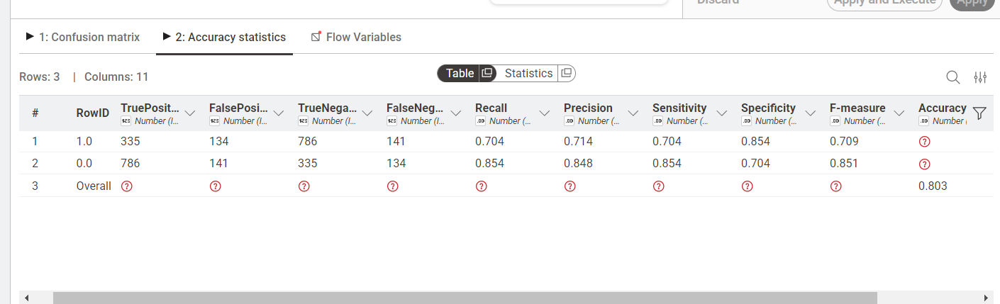

Analisa Data Menggunakan Naive Bayes#
1. Pendahuluan#
Latar belakang analisis data ini adalah untuk memperkenalkan dan menerapkan metode klasifikasi Naive Bayes pada dataset karyawan nyata yang bersumber dari Kaggle (Employee Dataset). Dataset ini memuat informasi demografis dan historis karyawan beserta label apakah karyawan tersebut akhirnya resign (LeaveOrNot). Naive Bayes dipilih karena kesederhanaannya, kecepatan pelatihan, serta performa yang baik pada banyak kasus klasifikasi meskipun asumsi independensi fiturnya sederhana.
Tujuan analisis:
Menjelaskan konsep Naive Bayes secara ringkas dan matematis.
Melakukan perhitungan manual untuk beberapa baris data karyawan sesungguhnya, langkah demi langkah.
Menyediakan contoh implementasi menggunakan Python (
scikit-learn) dalam workflow KNIME.Membahas hasil, interpretasi, serta kelebihan dan kekurangan metode.
2. Pengertian Naive Bayes#
Naive Bayes adalah metode klasifikasi probabilistik yang didasarkan pada Teorema Bayes. Konsep utamanya adalah menentukan probabilitas kelas target \(C\) (misal LeaveOrNot=1, artinya resign) ketika diberikan bukti atau fitur \(x_1, x_2, \dots, x_n\) (misal Age, PaymentTier, EverBenched).
Teorema Bayes dinyatakan sebagai berikut:
Komponen utama:
Prior \(P(C)\): probabilitas awal kelas \(C\) sebelum melihat data baru - dihitung dari frekuensi kelas dalam data latih.
Likelihood \(P(x_i \mid C)\): probabilitas mengamati nilai fitur \(x_i\) ketika kelas adalah \(C\). Untuk fitur kategorik dihitung dari frekuensi; untuk fitur numerik diasumsikan distribusi Gaussian.
Posterior \(P(C \mid x)\): probabilitas kelas yang diinginkan setelah melihat bukti/data.
Asumsi Naive (independensi): metode ini mengasumsikan fitur-fitur bersifat independen satu sama lain dalam kondisi kelas tertentu. Dengan asumsi ini, likelihood multivariabel dapat dipecah menjadi hasil kali likelihood per-fitur:
Walaupun asumsi ini jarang benar sepenuhnya, Naive Bayes sering tetap memberikan hasil yang baik.
3. Dataset yang Digunakan#
Dataset yang digunakan adalah Employee Dataset dari Kaggle (link), yang berisi 4.653 baris data karyawan dengan 9 atribut. Salinan lokal tersedia di dataset/Employee.csv.
Kolom |
Tipe |
Keterangan |
|---|---|---|
Education |
Kategorikal |
Tingkat pendidikan (Bachelors, Masters, PHD) |
JoiningYear |
Numerik |
Tahun karyawan bergabung |
City |
Kategorikal |
Kota domisili (Bangalore, Pune, New Delhi) |
PaymentTier |
Numerik (1–3) |
Level gaji (1=rendah, 2=sedang, 3=tinggi) |
Age |
Numerik |
Usia karyawan (tahun) |
Gender |
Kategorikal |
Jenis kelamin (Male / Female) |
EverBenched |
Kategorikal |
Apakah pernah idle/bench (Yes / No) |
ExperienceInCurrentDomain |
Numerik |
Pengalaman di domain saat ini (tahun) |
LeaveOrNot |
Biner (0/1) |
Target: 1 = resign, 0 = tetap |
Pada workflow KNIME, target klasifikasi yang dipakai adalah LeaveOrNot.
Sampel 6 Baris Data untuk Perhitungan Manual#
Berikut 6 baris pertama data sesungguhnya dari Employee.csv yang digunakan dalam perhitungan manual. Fitur yang dipakai untuk perhitungan dipilih tiga: Age (numerik), PaymentTier (kategorik), dan EverBenched (kategorik).
No |
Education |
JoiningYear |
City |
PaymentTier |
Age |
Gender |
EverBenched |
LeaveOrNot |
|---|---|---|---|---|---|---|---|---|
1 |
Bachelors |
2017 |
Bangalore |
3 |
34 |
Male |
No |
0 |
2 |
Bachelors |
2013 |
Pune |
1 |
28 |
Female |
No |
1 |
3 |
Bachelors |
2014 |
New Delhi |
3 |
38 |
Female |
No |
0 |
4 |
Masters |
2016 |
Bangalore |
3 |
27 |
Male |
No |
1 |
5 |
Masters |
2017 |
Pune |
3 |
24 |
Male |
Yes |
1 |
6 |
Bachelors |
2016 |
Bangalore |
3 |
22 |
Male |
No |
0 |
Distribusi kelas dari 6 baris di atas:
LeaveOrNot=0(Tetap): baris 1, 3, 6 => 3 karyawanLeaveOrNot=1(Resign): baris 2, 4, 5 => 3 karyawan
4. Perhitungan Manual Naive Bayes (Step-by-step)#
Perhitungan manual menggunakan 3 fitur:
Age => numerik, menggunakan distribusi Gaussian
PaymentTier => kategorik, menggunakan frekuensi
EverBenched => kategorik, menggunakan frekuensi
Langkah 1 - Hitung Prior#
Total data = 6. Kelas 0 (Tetap) = 3. Kelas 1 (Resign) = 3.
Langkah 2 - Statistik Fitur Age per Kelas (Gaussian)#
Data Age per kelas:
Kelas 0 (Tetap): 34, 38, 22
Kelas 1 (Resign): 28, 27, 24
Mean dan Varians Kelas 0:
Mean dan Varians Kelas 1:
Langkah 3 - Likelihood PaymentTier per Kelas (Kategorik)#
Data PaymentTier per kelas:
Kelas 0 (Tetap): [3, 3, 3]
Kelas 1 (Resign): [1, 3, 3]
PaymentTier |
Kelas |
Frekuensi |
P(PayTier | Kelas) |
|---|---|---|---|
3 |
0 (Tetap) |
3/3 |
1.0 |
3 |
1 (Resign) |
2/3 |
0.667 |
1 |
0 (Tetap) |
0/3 |
~0.001 (Laplace Smoothing) |
1 |
1 (Resign) |
1/3 |
0.333 |
Catatan: Ketika frekuensi = 0 (zero probability), digunakan Laplace Smoothing agar tidak menghasilkan posterior = 0. Di sini digunakan nilai kecil \(\epsilon = 0.001\) untuk \(P(\text{PayTier}=1 \mid \text{Kelas}=0)\).
Langkah 4 - Likelihood EverBenched per Kelas (Kategorik)#
Data EverBenched per kelas:
Kelas 0 (Tetap): [No, No, No]
Kelas 1 (Resign): [No, No, Yes]
EverBenched |
Kelas |
Frekuensi |
P(Benched | Kelas) |
|---|---|---|---|
No |
0 (Tetap) |
3/3 |
1.0 |
No |
1 (Resign) |
2/3 |
0.667 |
Yes |
0 (Tetap) |
0/3 |
~0.001 (Laplace Smoothing) |
Yes |
1 (Resign) |
1/3 |
0.333 |
Langkah 5 - Prediksi Data Karyawan Baru#
Misalkan terdapat seorang karyawan baru dengan data sebagai berikut:
Fitur |
Nilai |
|---|---|
Age |
30 tahun |
PaymentTier |
3 |
EverBenched |
No |
Hitung Score tiap kelas:
Kelas 0 (Tetap Bekerja):
Kelas 1 (Resign):
Nilai \(P(\text{Age} \mid \text{Kelas})\) diperoleh dari perhitungan Gaussian pada Langkah 2.
Normalisasi untuk mendapatkan probabilitas:
Langkah 6 - Keputusan Kelas Akhir#
Karena \(P(\text{Kelas}=0) > P(\text{Kelas}=1)\), maka:
Hasil Prediksi:
LeaveOrNot = 0→ Karyawan diprediksi TETAP BEKERJA (84.99%)
Hal ini didorong oleh dua faktor utama: seluruh karyawan yang tetap bekerja pada data sampel memiliki PaymentTier=3 dan EverBenched=No, sehingga likelihood kelas 0 jauh lebih tinggi dibanding kelas 1.
5. Implementasi di KNIME#
Workflow KNIME berikut menunjukkan alur analisis data dari pembacaan file CSV hingga evaluasi model Naive Bayes menggunakan dataset Employee secara penuh (4.653 baris).
5.1 CSV Reader#
Node CSV Reader digunakan untuk membaca file Employee.csv. Dataset memuat 4.653 baris dan 9 kolom termasuk kolom target LeaveOrNot.

5.2 Missing Value#
Node Missing Value digunakan untuk menangani nilai kosong. Data bertipe string diisi dengan Most Frequent Value, sedangkan data numerik diisi dengan Mean.

5.3 One to Many#
Atribut kategorikal (Education, City, Gender, EverBenched) diubah menjadi bentuk numerik menggunakan node One to Many (one-hot encoding) agar bisa diproses algoritme Naive Bayes.

5.4 Column Filter#
Node Column Filter dipakai untuk memilih fitur relevan dan membuang kolom yang tidak diperlukan sebelum masuk ke model.

5.5 Python Script#
Model dibangun menggunakan node Python Script. Alur: memuat data, memisahkan fitur dan target, melakukan encoding, membagi data latih/uji, lalu melatih model dengan CategoricalNB.
import knime.scripting.io as knio
import pandas as pd
from sklearn.model_selection import train_test_split
from sklearn.naive_bayes import CategoricalNB
from sklearn.preprocessing import OrdinalEncoder
df = knio.input_tables[0].to_pandas()
X = df.drop("LeaveOrNot", axis=1)
y = df["LeaveOrNot"]
encoder = OrdinalEncoder()
X_encoded = pd.DataFrame(encoder.fit_transform(X), columns=X.columns).astype(int)
X_train, X_test, y_train, y_test = train_test_split(X_encoded, y, test_size=0.3, random_state=42)
model = CategoricalNB()
model.fit(X_train, y_train)
y_pred = model.predict(X_test)
result = X_test.copy()
result["actual"] = y_test.values.astype(str)
result["prediction"] = y_pred.astype(str)
knio.output_tables[0] = knio.Table.from_pandas(result)
Disclaimer: Kode di atas dijalankan di dalam node
Python ScriptKNIME, bukan skrip Python mandiri.knio.input_tablesdanknio.output_tableshanya tersedia di lingkungan KNIME.

5.6 Scorer#
Node Scorer membandingkan kolom actual dan prediction untuk menghasilkan confusion matrix.

5.7 Accuracy#
Dari hasil evaluasi pada dataset penuh (4.653 baris), akurasi keseluruhan berada pada kisaran 0.803 (80.3%).

File Hasil Project: Workflow KNIME lengkap tersedia di: File KNIME di Google Drive.
6. Hasil dan Analisis#
Ringkasan Perhitungan Manual#
Kelas |
Score (tidak ternormalisasi) |
Posterior |
|---|---|---|
0 = Tetap Bekerja |
0.02884 |
84.99% ← Dipilih |
1 = Resign |
0.005093 |
15.01% |
Karyawan dengan Age=30, PaymentTier=3, dan EverBenched=No diprediksi TETAP BEKERJA. Hasil ini konsisten dengan pola pada data latih sampel - semua karyawan tetap memiliki PaymentTier=3 dan tidak pernah di-bench.
Kelebihan Naive Bayes:
Sederhana dan cepat untuk training, cocok untuk dataset besar.
Bekerja baik pada data kategorik dan masalah teks (misal: spam filtering).
Performa baik meski asumsi independensi tidak sepenuhnya terpenuhi.
Efisien untuk dataset dengan banyak fitur kategorik seperti Employee Dataset.
Kekurangan Naive Bayes:
Asumsi independensi antar fitur sering tidak realistis (misal:
EducationdanPaymentTierkemungkinan berkorelasi).Sensitif terhadap zero probability - memerlukan Laplace Smoothing.
Untuk fitur numerik, asumsi distribusi Gaussian mungkin tidak tepat jika data tidak terdistribusi normal.